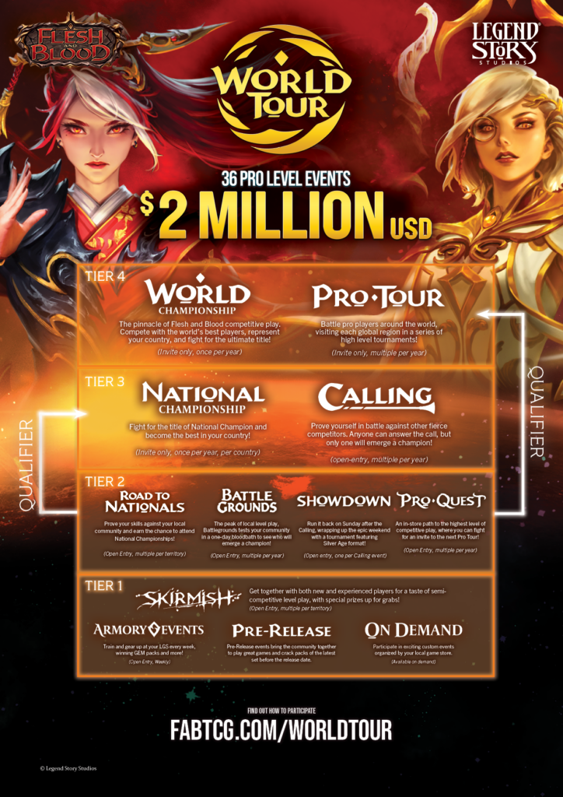
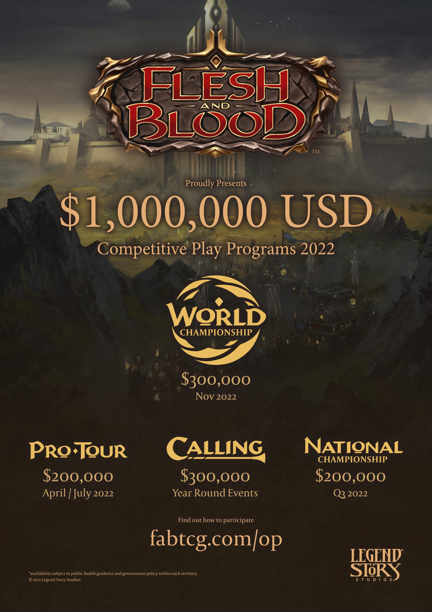
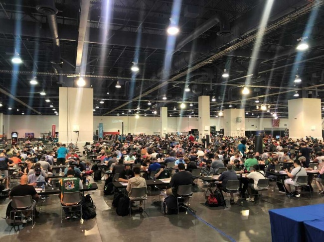

Me chamo Emanuel e desde muito novo sempre amei jogos de cartas, principalmente os famosos "trading card game", tanto pelo valor colecionável, quanto pela jogabilidade divertida. Hoje, por exemplo, existem diversos torneios por todos os países com diversas premiações diferenciadas, por exemplo, o último grande torneio de Flesh and Blood teve uma premiação de 2 milhões de dólares para o primeiro colocado.
Mas nem tudo se resume a torneios grandes e ter que viajar para outros locais, os torneios vão do tier 1 até o 4, os tiers mais baixos se resumem a torneios casuais em lojinhas de bairro e tier 4 são torneios em cidades grandes como São Paulo.



Torneio em Las Vegas para disputar as finais (cerca de 750 jogadores)Vídeo públicitário com o Jacob Bertrand jogando Flesh and Blood